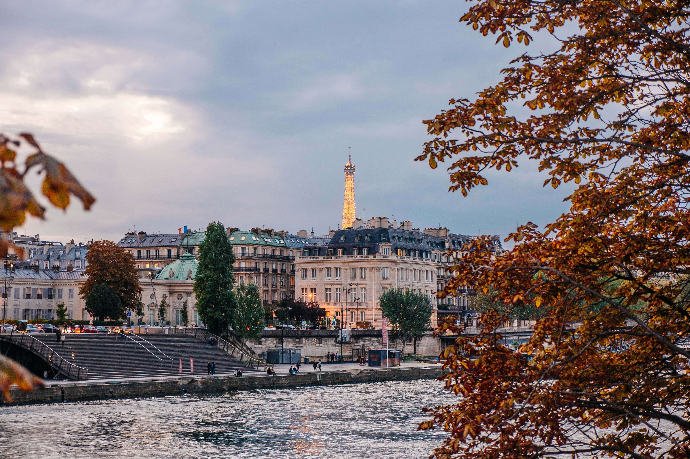

דילוג לתוכנית היום
הטיול לפריז ודיסנילנד
28.09 — 07.10.2026
היומן המשפחתי
Русский
↗

BONJOUR, LA FAMILLE!
פריז,
ביחד.
קצת קסם. הרבה סקרנות. כולנו כאן.
10 ימים
7 מטיילים
דיסני + פריז
AUTUMN
20
26
PARIS, FRANCE
לאן היום?
בוחרים יום, יוצאים לדרך.
מי מטיילים?
כולם · 7 מטיילים
דן
סבא
מירי
אריאל
טאי
טוני
ליז
הלו״ז שלנו
אפשר גם אחרת
→ היום הקודם
היום הבא ←
תיק המסמכים
אישורי הטיול, בהישג יד.
כדי לבחור ימים ולצפות בלו״ז יש להפעיל JavaScript בדפדפן.
הורדת תוכנית הטיול